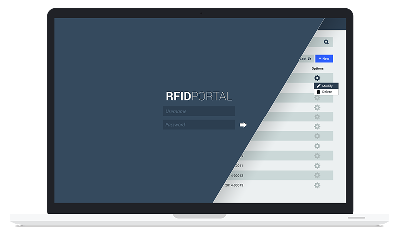

RFID Portal
Client
LX1 Technology Ltd.Role
Visual DesignDuration
2 weeks / winter 2014Brief
An RFID-enabled workflow is a system is an essential tool in an era that craves efficiency.
LX1 Technology Ltd. created a web application for an RFID system that includes an administrative portal and a messenger scanner interface. This project is the visual design of this portal.
{kind=link}
Understanding
Both the administrators and messengers using this application are office workers, thus a need for a simple interface and intuitive design.
UX Breakdown
The three main considerations of the interface are the tracking of actions, the settings for undertaking actions, and the process of scanning.
When actions are taken, the associated data is tracked and visualised in simple tables. In some tables, the status of outgoing information is also taken into account.
Previously, the settings screen was blocked out into floating sections that were difficult to track. The new design attempts to break each setting down into categories, and presents them in a linear fashion.
Portal Design
The portal is the heft of the project, in that it had to be a useable experience for an administrator who would have to sift through many pages. I chose to go for a very simple dashboard look and feel, and have a slide-in menu to allow for an immersive experience, as well as allow for more space for the main content.
{kind=link}
{kind=link}
{kind=link}
In addition to the tables, I had to include functionality that allowed the user to change the settings. Rethinking the structure of the form/input elements was a challenge, in that I was hoping to conserve space as well as make the interface more intuitive than it was previously.
{kind=link}
Scanner Design
The scanner was the second portion of the project. The main function of this was to have an interface that was simple, and easy for a 'messenger' to understand. The user flow through this would be to start the scanner, scan the files, and send the records off. Previously, the interface had included many input form fields that were disabled, and more information than necessary for users.
My solution, then was to only include what was necessary, in a manner that did not suggest that the information was contained within input fields, and had a clear way of expressing the controls that the user has access to.
{kind=link}
Fin
The RFID Portal was a great exercise in simplifying the complex settings and capabilities for both administrators and users. Although in hindsight, the UI solution is not ideal, this was a very good exercise in understanding the audience and how to create an easy experience for them.